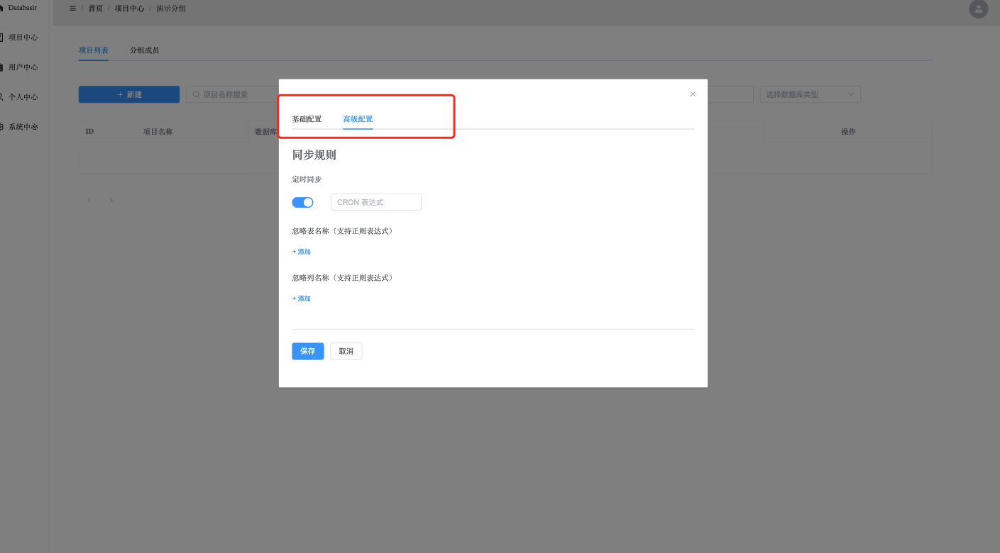

背景
文档在软件开发流程中扮演着重要的角色，它用于描述软件的功能、设计，是软件能持续演进的重要组成部分，可是由于软件和文档各自都需要独立维护，这就经常导致软件已经迭代到了 C 版本，但是文档却还停留在 A 版本。
那有没有什么办法能让软件迭代更新的同时，文档也自动更新呢？
答案当然是肯定的，业界的 swagger、yapi 等工具，它们就可以基于软件当前的版本生成最新的 API 文档。
可惜除了 API 文档以外，程序员经常还需要写数据库模型文档，那么这一块有没有对应的工具可用呢？
screw 算是一个解决方案，不过它主要解决的是数据库模型文档生成的问题，在文档管理能力方面还属于空白状态，为了填补这一块空白，Databasir 就诞生了。
项目地址：https://github.com/vran-dev/databasir
简介
Databasir 旨在解决数据库文档的管理问题，主要包含以下功能
- 支持 mysql、postgresql 等常用数据库（理论拥有 JDBC 驱动的数据库都能支持）
- 自动或手动同步数据库 Schema 并生成文档
- 数据库历史版本文档查看
- 支持 markdown 等格式导出
- 扁平化的权限管理模式，团队管理、成员管理一应俱全
- 关注数据库安全，密码加密存储，并且不会再返回前端
- ……
项目地址：
- Github：https://github.com/vran-dev/databasir
项目预览：
安装
Databasir 规划了以下安装方式
- Jar
- docker（TODO）
- docker compose（TODO)
目前 Jar 安装方式已经可用，而 Docker 和 Docker-Compose 的安装方式还在开发中。
接下来就演示一下通过 Jar 模式来部署 Databasir，更多细节也可以参考 Github 文档 。
通过 Jar 部署的话，对系统环境有一定要求，需要有以下依赖
- Java11+
- Mysql
系统环境就绪以后就可以前往项目 Release 页面（https://github.com/vran-dev/databasir/releases）下载最新版的 Databasir.jar。
下载完成以后，在 Databasir.jar 所在目录创建 config 文件夹，并在 config 下创建 application.properties，添加 MYSQL 的相关配置
# 端口号，默认8080
server.port=8080
# 数据库用户名
databasir.datasource.username=root
# 数据库密码
databasir.datasource.password=123456
# 数据库地址
databasir.datasource.url=127.0.0.1:3306
最后在 Databasir.jar 所在目录执行以下命令启动即可
java -jar databasir.jar
启动以后在浏览器输入 http://localhost:8080/ 既可以进入登陆页面
系统首次启动时会自动创建管理员账户
- 用户名：databasir
- 密码：databasir
快速入门
登陆系统以后就直接进入项目中心，左侧是页面导航，上侧是面包屑用于标识当前所处位置
在我们创建项目之前，需要先创建一个分组（一个分组下可以拥有多个项目）。
点击左上角蓝色的加好按钮即可创建分组，分组需要指定名称以及对应的组长，一个分组最多可以拥有 20 个组长。

组长输入框支持昵称、用户名、邮箱的模糊搜索
创建完成以后我们可以点击对应的分组卡片进入分组管理页面，该页面主要有两个 Tab，分别是
- 项目管理：可以增、删、改项目信息
- 成员管理：可以增、删、改分组成员
此刻我们需要先创建一个项目，点击新建按钮就会弹出项目创建表单
测试连接按钮可以验证 databasir 所在服务与数据库是否能正常联通
高级配置页面可以使用 cron 表达式来配置定时同步任务，也能够使用正则表达式来控制哪些表或列不生成文档。

项目创建完成以后我们就可以通过「查看文档」按钮进入文档页面
初次进入没有任何文档信息，需要我们手动同步一次（或者等定时任务自动同步）
同步完成以后页面会自动刷新，右侧目录栏会展示所有的表信息
每个表下面又会有列、索引、触发器等信息展示
 除了表或列的注释以外，组员还可以额外为每个表或字段做批注，这不会对数据库造成任何影响
除了表或列的注释以外，组员还可以额外为每个表或字段做批注，这不会对数据库造成任何影响
每一次同步都会生成一个历史版本，这样就可以随时回溯以前的版本文档进行查看了
角色权限
databasir 提供了非常扁平的权限管理模式，系统一共分为 4 个角色
- 系统管理员
- 组长
- 组员
- 游客
新用户默认是「游客」身份，游客拥有所有分组、项目的读权限，这么做是为了保证信息在团队内的公开，降低沟通和管理成本。
| 角色 | 分组管理 | 项目管理 | 用户管理 | 系统管理 |
|---|---|---|---|---|
| 系统管理员 | √ | √ | √ | √ |
| 组长 | 所有读 + 所属分组的写权限 | 所有读 + 所属分组下项目的写权限 | 无 | 无 |
| 组员 | 只读 | 所有读 + 所属分组下项目的写权限 | 无 | 无 |
| 游客 | 只读 | 只读 | 无 | 无 |
系统管理员的添加需要到用户中心执行，建议为系统多添加几个系统管理员，避免形成单点故障。

未来规划
项目目前还处于 Beta 中，基本功能已经完备了，后续会着重关注于扩展性和审计功能方面。
扩展性分为三个点
- 支持更多的文档导出格式、文档模板自定义等
- 支持更多的数据库类型、用户可以基于配置扩展新的数据库类型（只要符合 JDBC 的协议）
- 系统事件 hook，比如文档同步完成通知、项目删除通知等
审计方面的话，功能可多可少，短期内会优先实现
- 用户操作审计日志
- 文档自动同步审计日志
如果你有任何好的建议或者疑问都可以通过 Github issue 的方式提出
附录
- swagger, https://github.com/swagger-api
- yapi, https://github.com/YMFE/yapi
- screw, https://github.com/pingfangushi/screw
- databasir, https://github.com/vran-dev/databasir